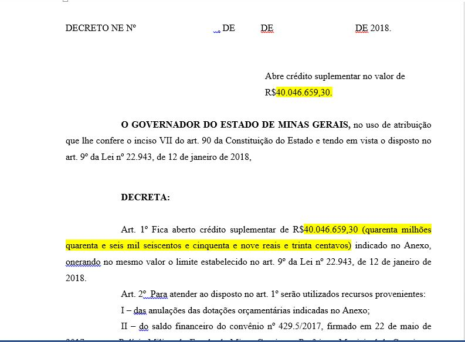

Capítulo 5 Confecção da Minuta do Decreto
Nesta seção veremos como fazer a confecção da Minuta do Decreto
5.1 Roteiro Geral
- [ ] Pegar Minuta de Decreto anterior
- [ ] Mudar valores da suplementação
- [ ] Copiar e colar incisos
- [ ] Revisar escrita dos incisos
- [ ] Copiar e Colar Nota do SIAFI
- Formatar Nota do SIAFI no documento
- Corrigir erros ortográficos
- [ ] Revisar Minuta do Decreto
5.2 Roteiro Específico
5.2.1 1. Pegar Minuta de Decreto anterior
- Abra a pasta de Minutas Finalizadas (S:.Execução Física e Orçamentária018. Núcleo de Gestão Orçamentária. Decretos2. Minutas Finalizadas)
- Verifique o número da última minuta
- Crie uma pasta com o número da minuta atual (última + 1)
- Vá na pasta da última minuta e copie a minuta de decreto
- Cole na pasta da minuta atual e renomeie
5.2.2 2. Mudar Valores da Suplementação
De posse da minuta verifique os valores de suplementação e os altere para o valor da suplementação atual, os trechos em destque da figura baixo são os que devem ser alterados:
Figura 1: Alteração dos valores de suplementação

alteracao_valores
Fonte: SCPPO
5.2.3 3. Copiar e Colar Incisos
- Apague os incisos presentes na minuta (incisos da minuta anterior)
- Substitua pelos incisos das solicitações colocadas pelos setorialistas
IMPORTANTE: Não esqueça de revisar os incisos segundo as boas práticas disposta na Solicitação desse mesmo manual
IMPORTANTE: Caso os incisos tenham o mesmo contrato utilizado da mesma operação orçamentária deve-se somar os incisos
5.2.4 4. Copiar e Colar Nota do SIAFI
5.2.4.1 4.1 Retirar Nota do SIAFI
- Vá para o endereço https://www.siafi.mg.gov.br/fcag/SIAFI/site_siafi_mg/relatorio (no internet explorer)
- Preencha a tela de Login
- Usuário
- Senha
- Unidade Executora: 1500008
- Ano de Exercício
- Clique em Continuar
- Relatorios da Sucor
- Minutas de Decretos - MINUTAS
- Na lupa do lado direito insira o número da minuta e aperte ENTER
- Salve a minuta no computador
5.2.4.2 4.2 Formatar a Nota do SIAFI
- Vá ao final do documento da minuta e localize o ANEXO
- Apague todo o texto após ele
- copie e cole o texto da Nota do SIAFI
- Selecione todo o texto colado
- Coloque tudo em minúsculo
- Alinhe a esquerda
- Alinhe ao centro
- Alinhe a direita
- Alinhe ao centro
- Alinhe a esquerda
- Vá na aba Revisão e clique em Ortografia e Gramática
- Corrija os erros de grámatica
- Coloque tudo em maiúsculo
- Revise o texto retirando os espaços entre as linhas e os cabeçalhos no meio do texto
ATENÇÃO: Algumas palavras como pública e alguns órgãos estão incompletos ou com a escrita errada, corrija-os durante a revisão